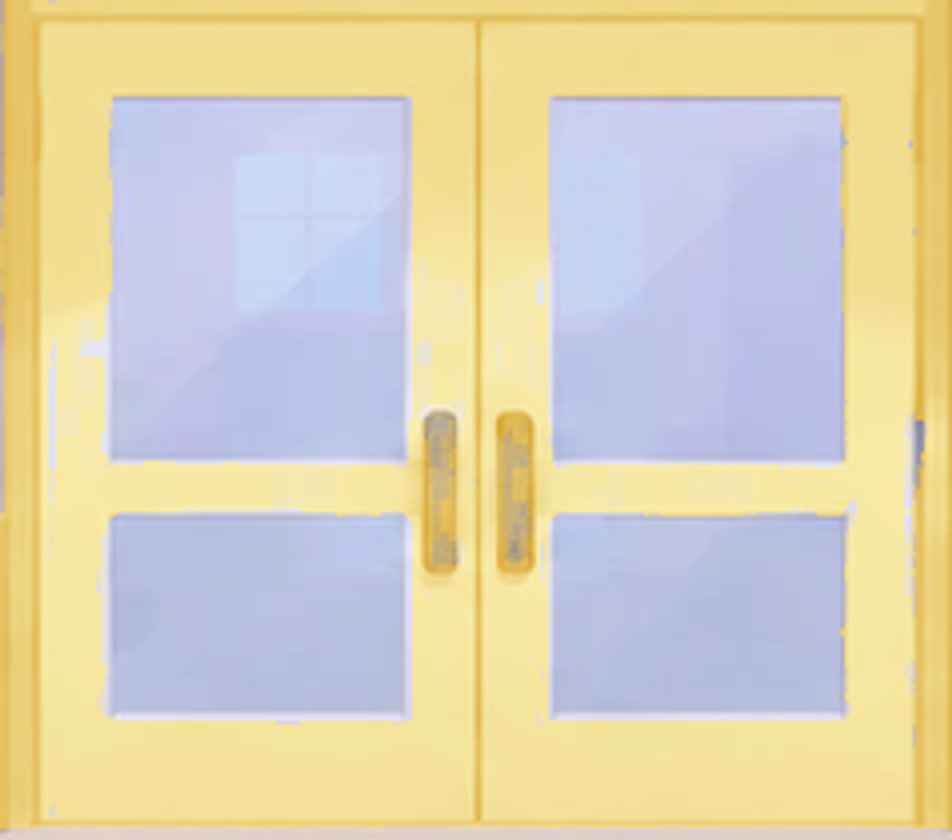
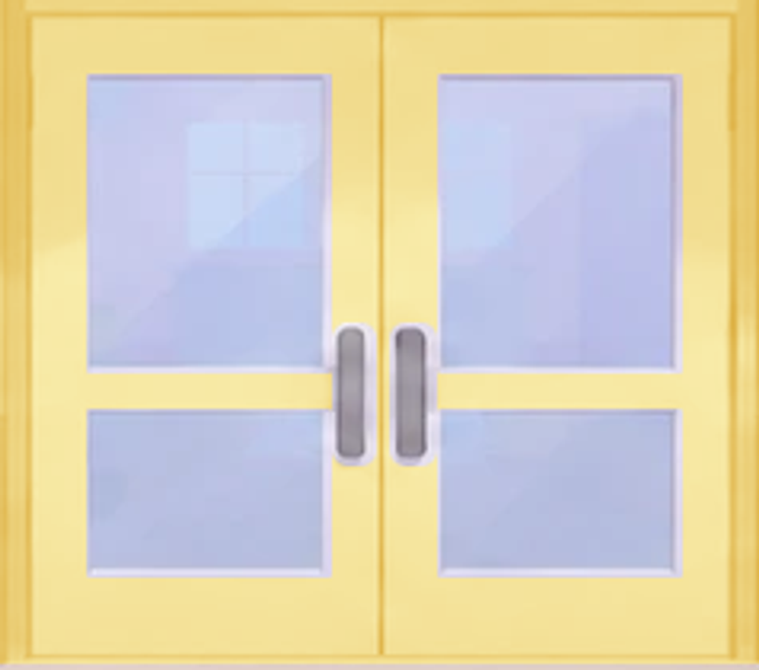
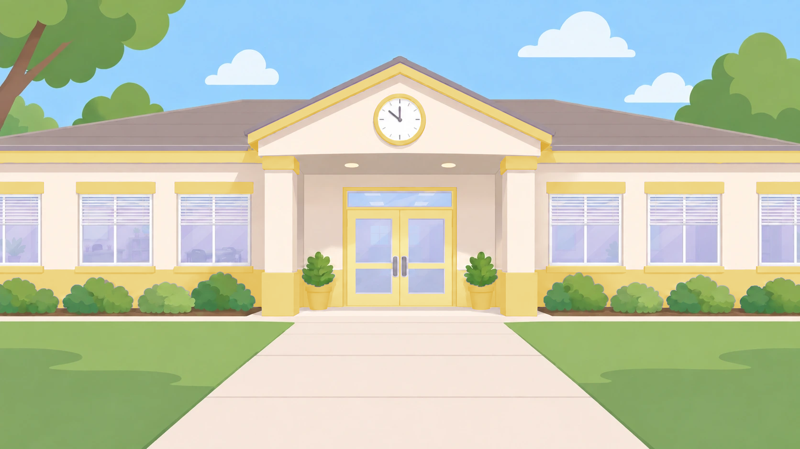

Yellow school entrance — door correction
The patched paint edges are replaced by continuous yellow paint. The original glass, reflections and metal handles are preserved.


Door-opening views
These use the study's actual door crops and palette renderer at the closed, halfway-open and open angles.
Full school exterior
Oh look! Here is a school.

All study previews and saved-version status · Lookit preview